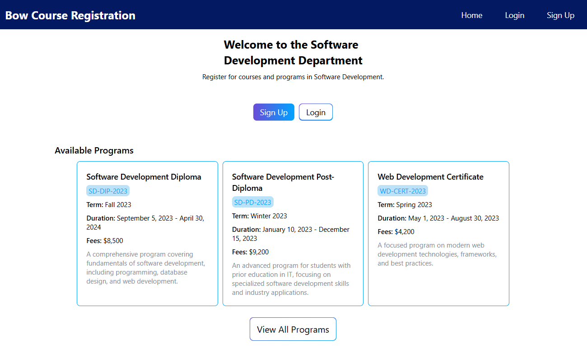
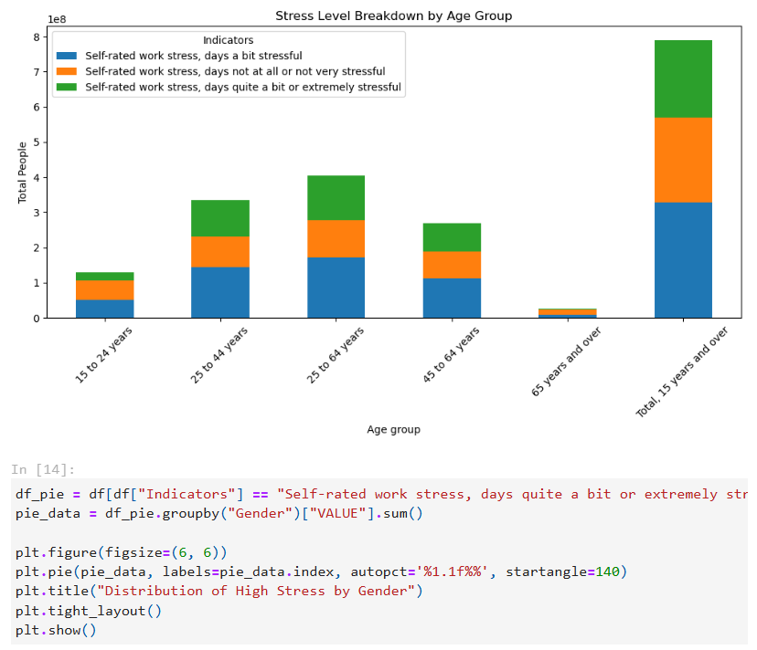

I've spent over 7 years as a medical office assistant, and that experience showed me firsthand how much potential there is to improve healthcare through better technology. Working with outdated systems and seeing inefficiencies in daily workflows inspired me to pursue software development. While health IT and informatics are my long-term passion, I'm eager to gain experience across the tech field and learn from different environments. I'm currently completing my software development diploma and actively seeking internship or junior developer opportunities where I can grow my skills and contribute to building quality software.

Recreated a multi-page college website as part of a software development course, focusing on clean UI, functional backend integration, and data handling.
My role: Frontend and backend development.
Key contributions:
• Designed wireframes to plan layout and user flow.
• Built the frontend using HTML, Tailwind CSS, and JavaScript.
• Implemented backend functionality and validated API calls.
• Connected application data to MongoDB.
• Ensured end-to-end functionality between frontend, backend, and database.

Examined reported workplace stress across different age groups and genders in Canada using survey data to better understand which groups may be more vulnerable to ongoing workplace stress.
My work included:
• Cleaning and preparing raw survey data for analysis.
• Performing exploratory data analysis to identify trends.
• Creating visualizations to compare stress levels across age groups and genders.
• Interpreting results and summarizing key findings.
• Presenting insights in a clear, non-technical format.
I'm currently looking for new opportunities. Whether you have a question or just want to say hi, feel free to reach out!